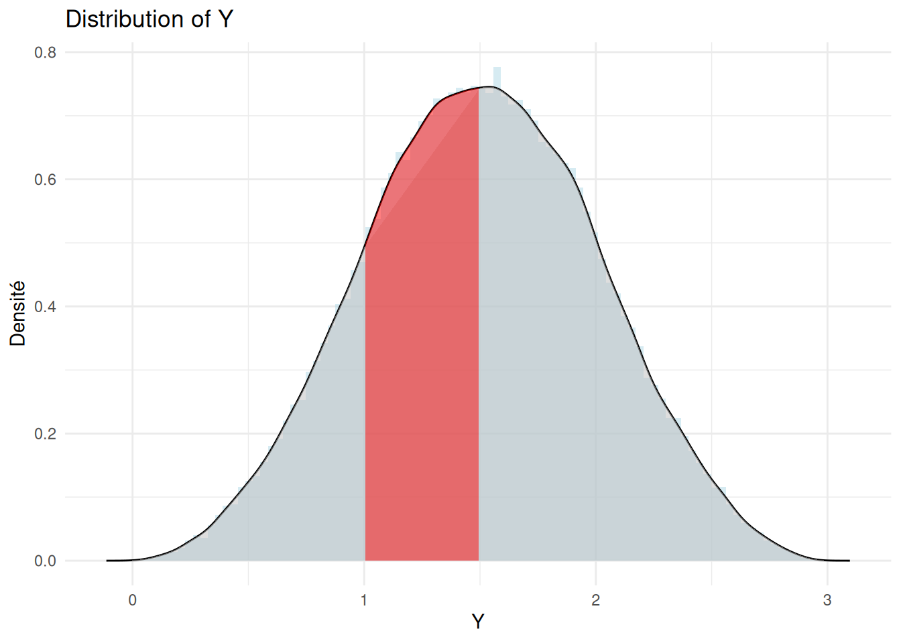
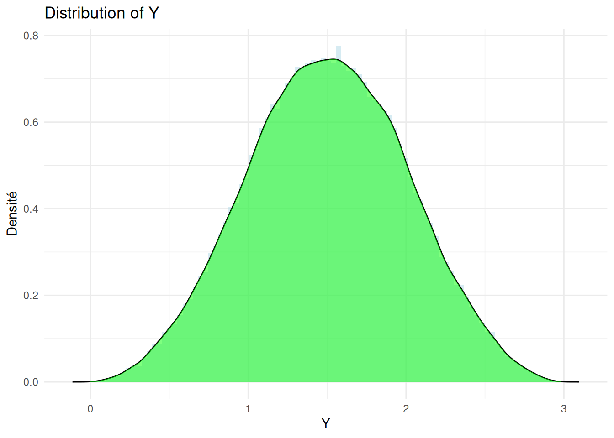
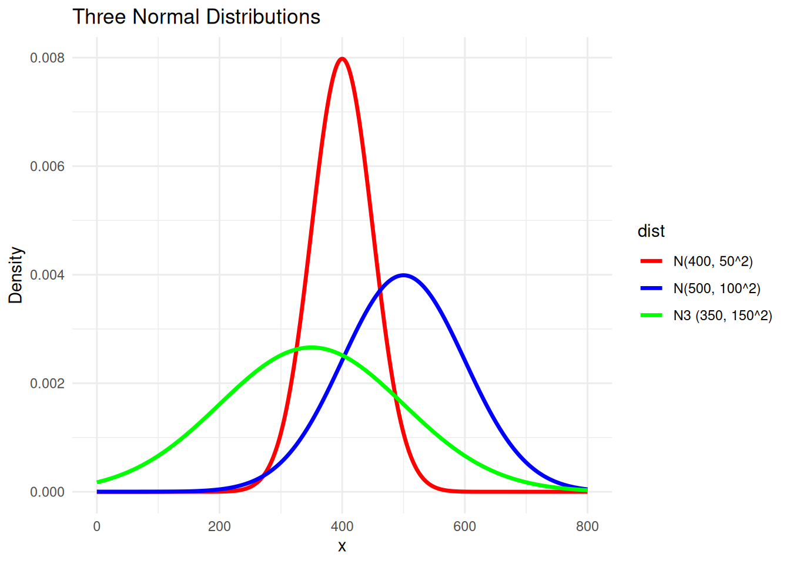
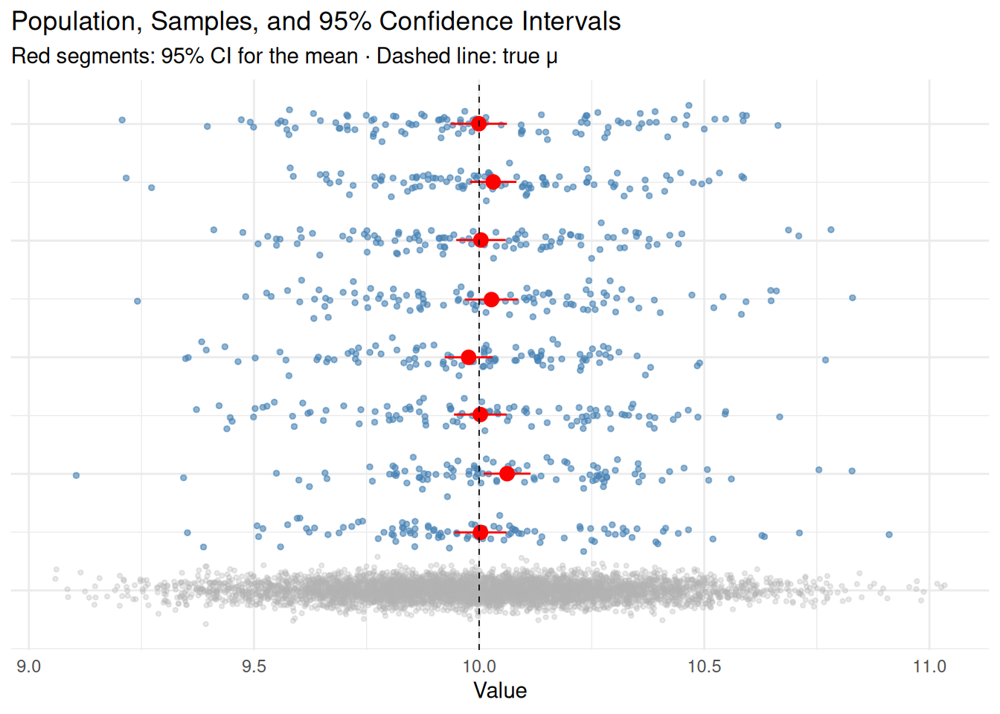
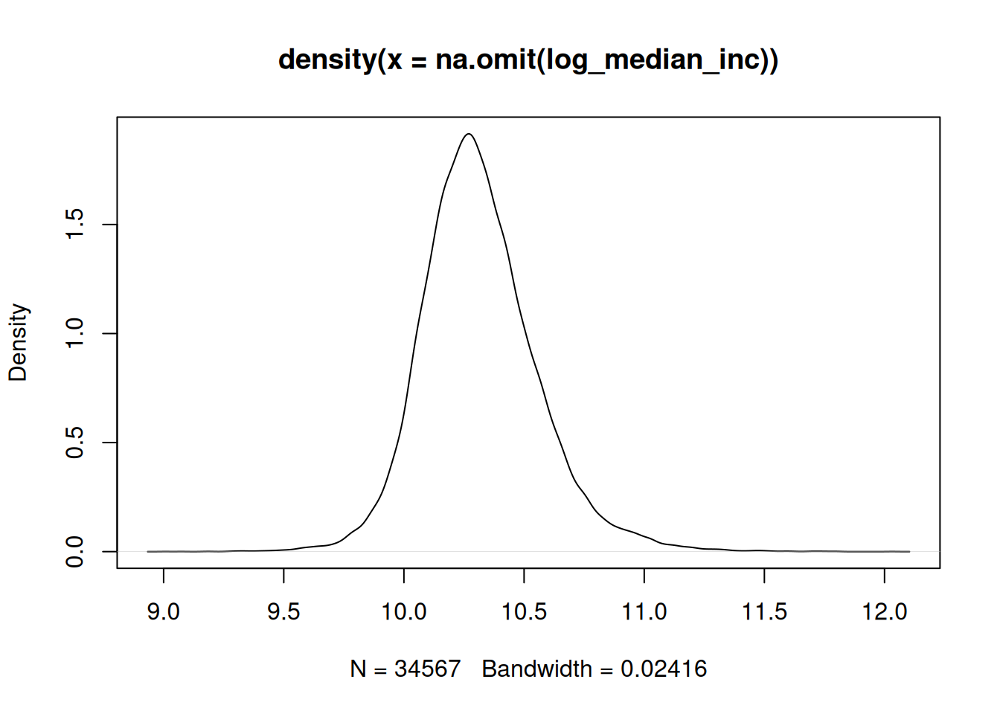
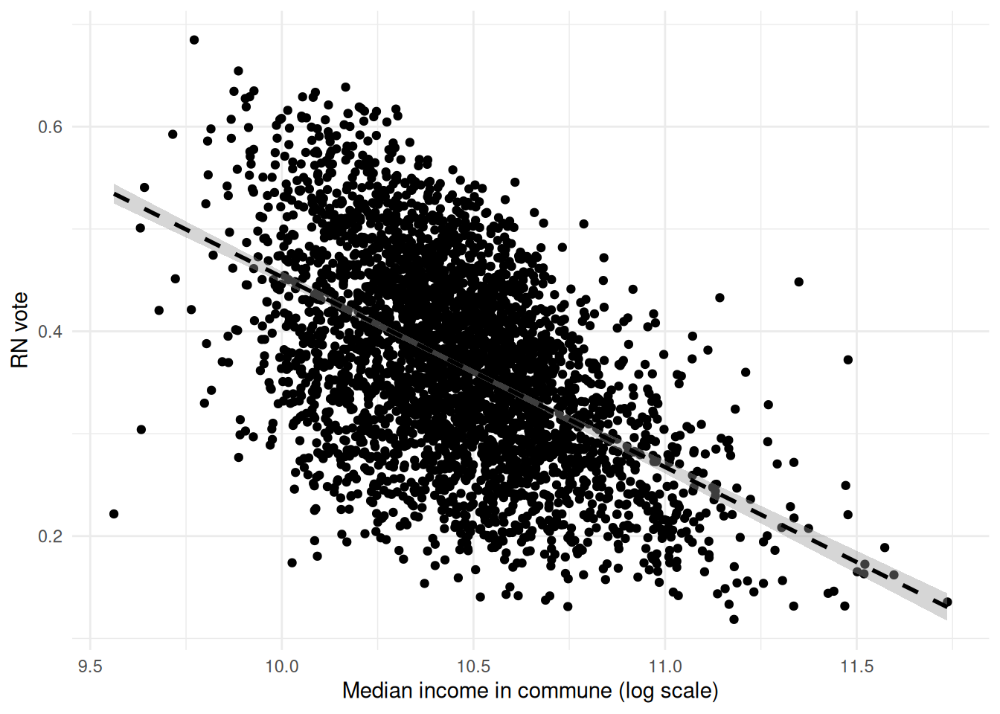
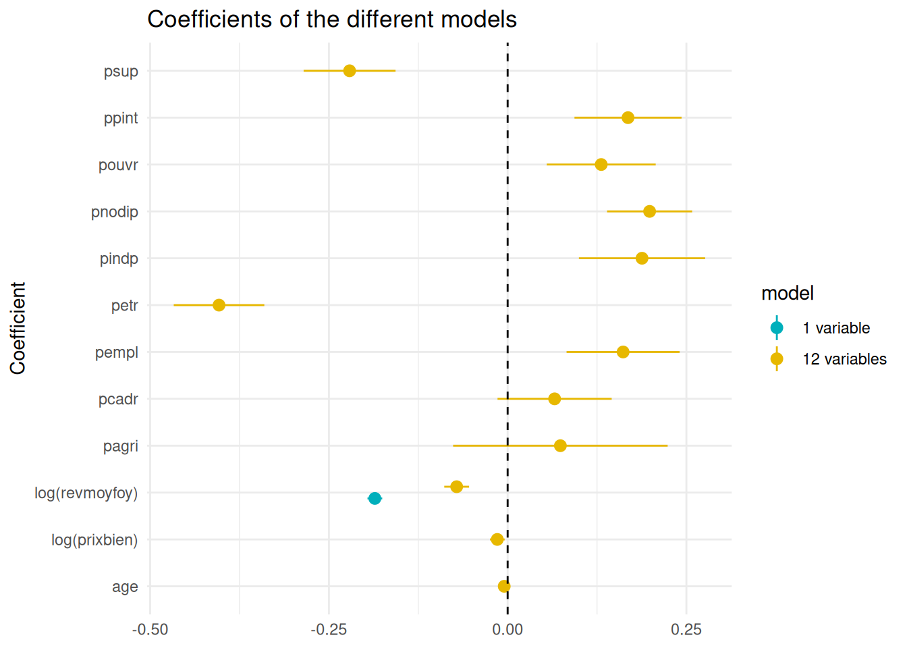

In our previous session, we focused on describing individual variables. We explored measures of central tendency—such as the mean, median, and mode—as well as measures of dispersion, which show how values are spread around these central points. We also examined graphical methods like histograms and density plots, which help visualize the distribution of a variable. Histograms display the frequency of values within intervals, while density plots represent the distribution as a continuous curve. These tools led us to the concept of the probability density function, a continuous function that best represents the distribution of a variable.
While describing a single variable is informative and foundational, most research aims to go further by examining relationships between variables. The goal is often to determine whether one variable (X) influences another (Y), or vice versa. This was briefly introduced at the end of Session 1, where we considered whether density could be reliably linked to a significant effect on the median income of municipalities. This question was complex because the subgroups not only had different means but also different dispersions—higher deviations around those means. To address this, we introduced the t-test, a method for comparing the means of two groups.
In this session, we will :
Remind you important notions of statistical inference, which we will be using for the rest of the class;
Introduce you to t-tests;
Introduce you to linear regression models;
Types of relationships
Of course, in practice we are often interested in studying relationships between different types of variables, and the choice of statistical method depends on the measurement scale of both the independent and dependent variables. When both the independent and dependent variables are categorical (for example, gender and voting preference), we typically use crosstabulation and chi-square tests to assess whether the distribution of one variable differs across the categories of the other. If the independent variable is categorical but the dependent variable is continuous (for example, comparing average incomes across two or more groups), we use mean comparison methods such as the t-test to determine whether group means differ. When the independent variable is continuous and the dependent variable is categorical (for example, predicting whether someone purchases a product based on age or income), logistic regression (often expressed in terms of logits) allows us to model the probability of category membership as a function of the continuous predictors. Finally, when both variables are continuous, we can assess their association with correlation and explore predictive relationships with regression analysis. Understanding these distinctions helps you choose appropriate analytical tools that match the nature of your data and research questions.
Recommended types of analysis based on variable types
DV: Categorical
DV: Interval/Continuous
IV: Categorical
Crosstabs / χ² Test
Compare Means / t-Test
IV: Interval/Continuous
Logistic Regression / Logits
Correlation / Scatter / Regression
In this session, we will build on these ideas by presenting two key approaches for analyzing relationships between variables:
t-tests : when your dependent variable is continuous (e.g. median income), your independent variable is categorical (e.g. density category)
Linear regressions : when your dependent variable and your independent variables are continuous
Statistical inference
Probability density function
Let’s come back to our example with three dices with (1) 1000 faces, 1400 faces, and 800 faces, with values respectively ranging between 1/1000 to 1, 1/1400 to 1, and 1/800 to 1. You have three random variables \(X_1, X_2,X_3\) corresponding to the outcome of each dice, and \(Y\) being the sum of these dices.
Imagine rolling those three dices, and plotting the resulting distribution. You could simulate that in R this way.
library(ggplot2)library(dplyr)
Attaching package: 'dplyr'
The following objects are masked from 'package:stats':
filter, lag
The following objects are masked from 'package:base':
intersect, setdiff, setequal, union
N =100000#number of measurementsx1 =sample(1:1000,N, replace=T)/1000# first dice (values are from 1 to 6)x2 =sample(1:1400,N, replace = T)/1400x3 =sample(1:800,N,replace = T)/800y = x1+x2+x3dat <-data.frame(y)head(dat, 10)
dens <-density(dat$y)approx(dens$x, dens$y, xout =1.291)
$x
[1] 1.291
$y
[1] 0.7084257
You might ask yourself : what is the probability of obtaining 1.291 ? Of course, this probability would be extremely low : \(P_X(x) \rightarrow 0\). Instead, you would rather consider the probability of having a value falling in a given interval \([a,b]\), for instance \([1, 1.5]\). This probability would be given by: \[\begin{equation}
\int_a^b f_X(x) \text{d}x
\end{equation}\]
This fancy integral means nothing more than the sum of all values of \(f_X\) multiplied by tiny intervals \(\delta x \rightarrow 0\). Graphically, it is the area under the curve \(f_X\), for x varying from \(a\) to \(b\). This is shown visually on the graph below :

\(f_X\) is called a density because it is normalised in such way that when summing all the values over the range of potential outcomes \(x\), which is written by the integral : \[\begin{equation}
\int f_X(x) dx = 1
\end{equation}\]
Hence, for continuous random variables, the probability that the variable falls within a given interval, is calculated as the integral of the probability density function (PDF) over that interval:
\[\begin{equation}
\Pr(a \leq X \leq b) = \int_a^b f_X(x) \, dx
\end{equation}\]
Another way of seeing that the probability of obtaining a single value \(\rightarrow 0\) for continuous variable is to compute the probability that X lies within an extremely small interval : \[\begin{equation}
\mathbb{P}(a \leq X \leq a + \epsilon),
\end{equation}\]
Where epsilon is an extremely small number. In the case where \(\epsilon = 0.01\) and \(a = 1\), we have the following visualisation (a smaller epsilon would become impossible for us to see).

If the interval \([a, a+\epsilon]\) is very small (for example, around \(x = 1.291\)), the integral of the PDF \(f_X(x)\) over that range is close to 0 (the area under the curve along this interval is almost zero). This shows that as the interval shrinks, and if \(\epsilon \rightarrow 0\), the probability approaches zero. Therefore, for a continuous variable, the probability of obtaining any single exact value is zero.
Computing probabilities
Yet the probability of obtaining one specific value is in general not what we search for. We are generally more interested in knowing the probability that the random variable is above or below a certain value :
This value can either be found numerically, or by integration. That is why knowing the p.d.f of a random variable is so important: it allows to compute the associated probabilities of this random variable. There exist many distributions possible depending on your random variables, yet the most important one is called the normal distribution.
The normal distribution
The normal distribution has the following expression :
where “e” stands for the exponential (\(\approx 2.71828\)). It is generally noted \(\mathcal{N}(\mu, \sigma^2)\), where \(\mu\) stands for its mean, and \(\sigma^2\) for its variance. The normal distribution is therefore defined by two parameters : one parameter of position, \(\mu\), and one parameter of dispersion, \(\sigma\).
The canonical form of the normal distribution, called the ‘standard normal distribution’, is \[\begin{equation}
\mathcal{N}(0,1) = \frac{1}{\sqrt{2\pi}} e^{-\frac{1}{2}x^2},
\end{equation}\] which is a normal distribution with a mean that is zero, and a standard deviation of 1.
The normal distribution has important properties, that make it extremely useful in practice :
It is continuous
Unbounded (it ranges from \(-\infty \text{ to } +\infty\))
Symmetrical
The mode = median = mean
The following graph shows you three different normal distributions with different means and variances. You can see that the peak of the distribution is located at its mean, and that the variance translates how dispersed the distribution is around its mean.

In general, we will assume that our random variables follow normal distributions. If that is not the case, and the distribution is heavily skewed, you could transform your values by either logging it (when positively skewed, as the log will attenuate the highest values) or exponentiating it (when negatively skewed, as the exponential will push the lowest values). If our random variables follow a normal distribution, then their mean and standard deviations correspond to the parameters \(\mu\) and \(\sigma\) of the normal distribution, and we can easily compute the probabilities.
Estimation of probabilities
Consider again the random variable y, obtained from the sum of dices x1, x2, x3. \(Y\) is a normal distribution and you have the parameters :
mean(y)
[1] 1.503165
sd(y)
[1] 0.4994592
which means that the normal distribution is centered in 1.5, and its standard deviation is 0.5 : 68% of the data is located within the interval between 1 and 2.
Since you now know that : \[\begin{equation}
P(y \leq 2.5) = \int_{-\infty}^{2.5} \mathcal{N}(x; 1.5, 0.5) \text{d}x
\end{equation}\]
you can therefore easily compute the probability that, if you roll your dices once, you get a value below or equal to 2.5. Since you now know that your random variable follows a normal distribution, this means should you compute ::
which is of course very difficult if you don’t know much about integrals (and even if you know much about integrals, Gaussians are in fact very difficult to integrate). That is why you have two in this case : either you use the tables, which is more elegant and what you must master, or you integrate this numerically (less efficient and less precise, though).
Statistical tables
One way of estimating that integral, that we more commonly use in practice, is the following. You could easily switch from this \(\mathcal{N}_Y(1.5, 0.5)\) to the normal \(\mathcal{N}(0,1)\) by considering the random variable Z, made from Y:
\[\begin{equation}
Z = \frac{Y-\mu_y}{\sigma_y}
\end{equation}\]
This random variable Z follows a standard normal distribution \(\mathcal{N}(0,1)\). Tables which associate for each level of confidence (or probability), the value of that corresponding Z variable, exist online. You can find such “z” table here or here. They basically have computed the exact value of that difficult integral for many different values of Z, and give the result.
Student’s t Distribution Table (Upper-tail critical values)
DF
0.10
0.05
0.025
0.01
0.005
1
3.078
6.314
12.706
31.821
63.657
2
1.886
2.920
4.303
6.965
9.925
3
1.638
2.353
3.182
4.541
5.841
4
1.533
2.132
2.776
3.747
4.604
5
1.476
2.015
2.571
3.365
4.032
6
1.440
1.943
2.447
3.143
3.707
7
1.415
1.895
2.365
2.998
3.499
8
1.397
1.860
2.306
2.896
3.355
9
1.383
1.833
2.262
2.821
3.250
10
1.372
1.812
2.228
2.764
3.169
11
1.363
1.796
2.201
2.718
3.106
12
1.356
1.782
2.179
2.681
3.055
13
1.350
1.771
2.160
2.650
3.012
14
1.345
1.761
2.145
2.624
2.977
15
1.341
1.753
2.131
2.602
2.947
16
1.337
1.746
2.120
2.583
2.921
17
1.333
1.740
2.110
2.567
2.898
18
1.330
1.734
2.101
2.552
2.878
19
1.328
1.729
2.093
2.539
2.861
20
1.325
1.725
2.086
2.528
2.845
21
1.323
1.721
2.080
2.518
2.831
22
1.321
1.717
2.074
2.508
2.819
23
1.319
1.714
2.069
2.500
2.807
24
1.318
1.711
2.064
2.492
2.797
25
1.316
1.708
2.060
2.485
2.787
26
1.315
1.706
2.056
2.479
2.779
27
1.314
1.703
2.052
2.473
2.771
28
1.313
1.701
2.048
2.467
2.763
29
1.311
1.699
2.045
2.462
2.756
30
1.310
1.697
2.042
2.457
2.750
So for instance, if you consider your variable Z, and you want to know the probabilities that
\[\begin{equation}
Y = \sigma_Y Z + \mu_Y \leq 2.5,
\end{equation}\] that means you are seeking to know the probabilities that \[\begin{equation}
Z \leq \frac{2.5-\mu_Y}{\sigma} = 1.9986
\end{equation}\]
and this value can be found in the tables ! If you go to the z-value \(\approx 1.9986\), this gives you about 0.97670, hence you have a 97% probability that your dice will be \(\leq 2.5\) (and less than 3% that it will be \(\geq 2.5\)).
If you repeat the same process for \(\leq 2\), you get through the tables
\[\begin{equation}
Z \leq \frac{2-\mu_Y}{\sigma} = 0.997941
\end{equation}\]
This gives you a probability of about 0.83891 in the tables - about 83.891%. Again, the two estimations are extremely close ! That is why we couldn’t insist more on the importance of the mean and the variance in the previous class : if your random variable follows a normal distribution, they basically contain all the information you need to compute probabilities !
Numerical integration (optional)
You can also estimate such integrals with numerical methods. As we have seen before, an integral is graphically worth the area under a curve (a function), along a certain range.
The basic idea behind such numerical integration is to divide your range in many small rectangles, with equal width, here for instance \(0.05\), and each length worth \(\mathcal{N}(x; \mu, \sigma^2)\) and consider the sum of the areas of these rectangles to be close to the exact integral. The smaller the width you choose, the more precise your estimation will be, of course.
In our case, evaluation of the integral would therefore look like the figure below, where we would sum all the areas of the rectangles for \(x \leq 2.5\).
With rectangles \(0.000001\) large, numerically computing this integral therefore gives:
int =0deltax =0.000001x = deltax/2while(x <=2.5){ x = x + deltax int = int+deltax*1/(sigma*sqrt(2*pi))*exp(-1/2*((x-mu)/sigma)**2)}print(int) #
[1] 0.9757158
This gives about 0.97, which is very close to what you had computed from the tables. Note how I am computing this integral : I am just summing over all the values \(x \leq 2.5\), with the very small steps \(\delta x = 0.0000001\) and therefore $ x = 0.000005$ , \(x = 0.000015\),\(x = 0.000025\), \(x = 0.000035\),…, \(x = 2.500000\) and adding the very small quantities:
\[\begin{equation}
\delta x \times \frac{1}{\sigma \sqrt{2\pi}} e^{-\frac{1}{2}(\frac{x-\mu}{\sigma})^2}
\end{equation}\]
As already said, an integral is just a fancy way of writing a sum for continuous variables ! Hence, numerically, a way of computing that integral is just to take a very small step, and simulate the sum ! If you repeat the exact same process for 2 instead of 2.5, you get :
[1] 0.8387625
which is also very close to what we had found from the tables.
The logic of inference
In general what we have is a sample of a population, with size \(n\), with means \(\bar{x}, s\), on the basis of which we seek to derive estimations of parameters on the overall population, of size $ N$, characterized by exact, non-random parameters \(\mu, \sigma\). Consider the example of a census or income survey. To estimate the average (or median) income in France, it is generally impractical to ask every individual. Instead, we question a randomly selected subset of the population and use the information collected to infer the population mean income. This is precisely the goal of statistical inference: to estimate unknown population parameters and quantify how reliable those estimates are.
Intuitively, the quality of such an estimation depends on several features of the sampling process:
How much the answers vary : If respondents give very similar answers, the estimate will be more precise than if incomes vary widely across individuals. This source of uncertainty is captured by the population (or sample) standard deviation \(\sigma\).
Larger samples provide more information and therefore lead to more precise estimates. The gain from increasing the sample size is especially important when samples are small: increasing the number of respondents from 15 to 30 has a much larger impact than increasing it from 5,000 to 10,000. This will be capture by your size of sample \(\sqrt(n)\).
This figure illustrates the situation we are simulating. The grey points represent the entire population, from which we would like to estimate a parameter such as the mean (shown by the dashed vertical line, which in practice is unknown).
To estimate this population mean, we draw random samples from the population. For each sample, we can compute observable quantities such as the sample mean and sample variance. These sample statistics are then used as estimators of the corresponding population parameters. By repeating this sampling process, we can study how these estimators vary from one sample to another and assess the precision of our inference.

Confidence interval
A point estimate such as the sample mean \(\bar{x}\) provides a single best guess for the population mean \(\mu\), but it does not convey how uncertain this estimate is. To quantify this uncertainty, we construct a confidence interval, - an interval that is supposed to contain \(\mu\) with a certain confidence (not because \(\mu\) mooves, but because the construction of your interval is a random process !). A confidence interval is a random interval—computed from the data—that is designed to contain the true population parameter with a specified probability. It is computed differently depending on the knowledge we have on the population dispersion \(\sigma\).
Formally, a \((1-\alpha)\times100\%\) confidence interval for \(\mu\) is an interval \([L,U]\) such that \[\begin{equation}
\mathbb{P}(L \le \mu \le U) = 1-\alpha.
\end{equation}\]The probability statement refers to the randomness of the sample (and hence of the interval), not to the parameter \(\mu\), which is fixed but unknown. For example, a 95% confidence interval is constructed so that, over repeated samples drawn in the same way, 95% of such intervals will contain the true population mean.
The width of a confidence interval reflects the precision of the estimate: it increases with the variability of the data and decreases with the sample size. This formalizes the intuitive ideas discussed earlier—greater heterogeneity in the population and smaller samples both lead to less precise inference.
Population with known variance \(\sigma\)
Suppose the population variance \(\sigma^2\) is known and the sample is drawn randomly from the population. By the Central Limit Theorem, when the sample size \(n\) is sufficiently large (or when the population itself is normally distributed), the sampling distribution of the sample mean is approximately normal:
This result allows us to standardize the sample mean: \[\begin{equation}
Z = \frac{\bar{x} - \mu}{\sigma / \sqrt{n}} \sim \mathcal{N}(0,1).
\end{equation}\] Let \(z_{1-\alpha/2}\) denote the \((1-\alpha/2)\) quantile of the standard normal distribution. A \((1-\alpha)\times100\%\) confidence interval for \(\mu\) is then given by \[\begin{equation}
\bar{x} \pm z_{1-\alpha/2}\,\frac{\sigma}{\sqrt{n}}.
\end{equation}\]
This expression highlights the role of population variability \(\sigma\) and sample size \(n\): the confidence interval widens with greater variability and shrinks at the rate \(1/\sqrt{n}\) as the sample size increases.
Population with unknown variance
In practice, the population variance \(\sigma^2\) is rarely known and must be estimated from the data. We therefore replace \(\sigma\) by the sample standard deviation \(s\), which introduces additional uncertainty, especially for small samples.
When the population is normally distributed, the standardized statistic \[\begin{equation}
T = \frac{\bar{x} - \mu}{s / \sqrt{n}}
\end{equation}\]
follows a Student’s \(t\) distribution with \(n-1\) degrees of freedom. Let \(t_{1-\alpha/2,n-1}\) denote the corresponding quantile of this distribution. A \((1-\alpha)\times100\%\) confidence interval for \(\mu\) is then
Compared to the normal-based interval, the \(t\) confidence interval is wider, reflecting the uncertainty from estimating \(\sigma\). As the sample size increases, the \(t\) distribution converges to the standard normal distribution, and the two approaches become asymptotically equivalent.
Comparing means of two populations
Known variances \(\sigma_1, \sigma_2\)
In many applications, we are interested in comparing the means of two populations rather than estimating a single mean. Suppose we draw independent random samples of size \(n_1\) and \(n_2\) from two populations with means \(\mu_1\) and \(\mu_2\), and (for now) known variances \(\sigma_1^2\) and \(\sigma_2^2\). The difference between the sample means, \(\bar{X}_1 - \bar{X}_2\), has mean \(\mu_1 - \mu_2\) and variance \(\sigma_1^2/n_1 + \sigma_2^2/n_2\). By the Central Limit Theorem, when the sample sizes are sufficiently large, the sampling distribution of the difference is approximately normal:
In practice, the population variances \(\sigma_1^2\) and \(\sigma_2^2\) are often unknown. In that case, we replace them with the sample standard deviations \(s_1\) and \(s_2\). The standardized statistic becomes
This forms the basis of the two–sample \(t\)–test, which allows us to test hypotheses of the form \(\mu_1 = \mu_2\) or to construct a confidence interval for \(\mu_1 - \mu_2\). As with the single–sample case, larger sample sizes increase the precision of the estimate, and the \(t\)–distribution approaches the normal distribution for large samples.
Hypothesis testing
Hypothesis testing is a formal procedure for deciding whether the data provide enough evidence to support a specific claim about a population parameter. We begin by stating two competing hypotheses:
The null hypothesis (\(H_0\)), which represents the default or status-quo assumption (e.g., \(\mu = \mu_0\));
The alternative hypothesis (\(H_1\) or \(H_a\)), which represents the effect or difference we are testing for (e.g., \(\mu \neq \mu_0\)).
Using a sample, we compute a test statistic—such as a \(Z\) or \(T\) value—that measures how far the observed data are from what is expected under \(H_0\).
We then calculate the p-value, the probability of observing data at least as extreme as what we collected, assuming \(H_0\) is true.
If the p-value is smaller than a pre-specified significance level \(\alpha\) (commonly 0.05), we reject \(H_0\) in favor of \(H_1\); otherwise, we fail to reject \(H_0\).
Hypothesis testing formalizes decision-making under uncertainty, complementing confidence intervals: while confidence intervals estimate plausible values for parameters, hypothesis tests assess the compatibility of data with specific hypothesized values.
Real-life application
Let us again consider the example of median incomes in French municipalities.
By plotting the distribution of median incomes, we generally observe a positive skew: a few municipalities have very high incomes, which pull the mean upwards. To stabilize the variance and make the distribution closer to normal, we can apply a logarithmic transformation of the incomes. We denote this transformed variable as:
Suppose we are interested in a specific median income, for example €100,000. Its logarithm is approximately \(100 000\) (logged, it is about 11.51293).
plot(density(na.omit(log_median_inc)))

log(100000)
[1] 11.51293
We then want to calculate: \[\begin{equation}
P(X \leq 100 000) = P(\mathcal{MI}_\text{log} \leq 11.51293)
\end{equation}\]
Using the mean and standard deviation of the log-transformed distribution (here \(\bar{x} = 10.31475\) and \(s=0.24000741\)), we standardize this value to obtain the z-value: \[\begin{equation}
\frac{11.51293-10.31475}{0.24000741} \approx 4.992263
\end{equation}\] Looking up this value in a standard normal table, it corresponds to nearly 99.999%, meaning that almost all municipalities have a median income below €100,000, which matches our intuition from the observed distribution.
If we consider a more moderate value, for example €40,000 (\(\text{log}(40,00 0\approx 10.59663\)), you get :
According to the normal table, this corresponds to approximately 87.9%, meaning that 87.9% of municipalities have a median income below €40,000 (after log-transformation).
Sampling and confidence intervals
Imagine now that you ignore the population mean (that is, the mean of the median income, for all communes in France), and that you would like to build a confidence interval with 95% chance of containing this mean. From what we saw earlier, the general principle is that a 95% confidence interval is constructed so that, if we repeated the sampling process many times, approximately 95% of the intervals would contain the true population mean.
Hence, with such an interval, the method guarantees that about 95% of the confidence intervals will include the population mean.
If you take 40 samples of 100 communes, this implies that roughly 2 of your intervals might not contain the true mean, purely due to random sampling variation. It is important to note that a 95% confidence interval does not tell you that the true mean has a 95% probability of being inside this specific interval, nor does it directly indicate the precision of your estimate. The probability does not arise from the uncertain value of the mean, but for your uncertain sampling process. The width of the interval—how precise it is—is primarily determined by the sample size and the variability of the data: larger samples lead to narrower, more precise intervals, while smaller samples result in wider, less precise intervals.
This is illustrated in the figures below, where we simulate multiple random samples of 100 observations drawn from the population of log-transformed median incomes. As we saw earlier, in case you know the population’s standard deviation \(\sigma\), the confidence intervals are just computed from :
\[\begin{equation}
\bar{x} \pm z_{1-\alpha/2}\,\frac{\sigma}{\sqrt{n}}.
\end{equation}\] with \(\alpha\) here being 0.05, 0.15, 0.01, 0.05 and \(n\) being 100, 100, 100, 1000. If you didn’t know the population’s standard deviation, you would need to use a t-statistic instead of the z-value.
The plot_ci function generates these simulations: for each sample, it computes the sample mean and constructs a confidence interval using a specified z-value (based on a certain confidence level). In the resulting plots, each point represents a sample mean, and the vertical lines represent the corresponding confidence intervals. Intervals that contain the true population mean are shown in blue, while those that do not are shown in red.
From the simulations, you can observe several key points. First, the width of the confidence intervals—their precision—is roughly the same for 95% and 85% confidence levels because the sample size is the same. However, the number of intervals that fail to capture the true mean is larger for the 85% confidence intervals, as expected. In the final scenario, increasing the sample size decreases the width of the intervals, illustrating how larger samples provide more precise estimates of the population mean. These simulations provide a visual and intuitive understanding of how confidence intervals behave, how their coverage depends on the confidence level, and how their precision depends on the sample size.
Imagine that a friend of yours claims that the average median income in French municipalities is 35,000€. You are skeptical about this claim and decide to take a sample of 150 communes to test whether this statement is likely to be true. Specifically, you will test the hypothesis:
Null Hypothesis (\(H_0\)): The population mean income is equal to 35,000€ : \(\mu = 35000\)
Alternative Hypothesis (\(H_a\)): The population mean income is not equal to 35,000€.
The next step is to calculate the sample mean and standard deviation, and use the one-sample t-test to evaluate whether the sample provides enough evidence to reject the null hypothesis. In R, this can be very easily implemented as follows, by using function t.test().
# Sample data (assumed to be the log-transformed median income)sample_data <-sample(log_median_inc, size =150, replace =FALSE)# Calculate sample mean and standard deviationsample_mean <-mean(sample_data)sample_sd <-sd(sample_data)# Hypothesis testmu_0 <-log(35000) # log-transformed value of 35,000€t_test_result <-t.test(sample_data, #specify the data usedmu = mu_0, #the hypothesis on the meanalternative ="two.sided",conf.level =0.95) #the value by default # Display the resultt_test_result
One Sample t-test
data: sample_data
t = -10.273, df = 149, p-value < 2.2e-16
alternative hypothesis: true mean is not equal to 10.4631
95 percent confidence interval:
10.24033 10.31220
sample estimates:
mean of x
10.27627
Here, the t.test function tests whether the sample mean significantly differs from 35,000€. The output includes the t-statistic and the p-value, which tells us the likelihood of observing a sample mean at least as extreme as ours under the assumption that the null hypothesis is true. If the p-value is below a chosen significance level (e.g., 0.05), we reject the null hypothesis in favor of the alternative hypothesis, suggesting that the average income in French municipalities is different from 35,000€. The result, in our case, is clear : the 95% confidence interval, which goes from 10.26071 to 10.34281 does not include the mean of the sample, 10.4631 - hence \(H_0\) is rejected at the 0.05 level. The population mean is not equal to 35000€.
Testing \(\mu_1 = \mu_2\)
Now, imagine that you want to compare the means of two groups: urban and rural communes. You have a sample of log-transformed median incomes from both groups and would like to test if the mean income in urban areas is different from that in rural areas. This can be done using the two-sample t-test, using the same function t.test(), already in R.
Your hypotheses are :
Null Hypothesis (\(H_0\)): The population means for urban and rural areas are equal, \(\mu_1 = \mu_2\)
Alternative Hypothesis (\(H_a\)): The population means for urban and rural areas are different: \(\mu_1 != \mu_2\).
This hypothesis test can be implemented easily in R as follows:
# Split data by urban and rural communesurban_income <-sample(log((data_dem %>%filter(dens =="Urbain dense"| dens =="Urbain intermédiaire"))$revmoyfoy), 150, replace =FALSE)rural_income <-sample(log((data_dem %>%filter(dens =="Rural"))$revmoyfoy), 150, replace =FALSE)# Perform a two-sample t-testt_test_urban_rural <-t.test(urban_income, rural_income, alternative ="two.sided", conf.level =0.95)# Display the resultt_test_urban_rural
Welch Two Sample t-test
data: urban_income and rural_income
t = 6.3215, df = 288.11, p-value = 9.833e-10
alternative hypothesis: true difference in means is not equal to 0
95 percent confidence interval:
0.1295962 0.2467853
sample estimates:
mean of x mean of y
10.45213 10.26393
In this case, the t.test function computes the difference in sample means and evaluates whether this difference is statistically significant. It outputs the t-statistic and p-value, which can be interpreted as follows:
If the p-value is smaller than the chosen significance level (e.g., 0.05), we reject the null hypothesis and conclude that there is a significant difference between the mean incomes in urban and rural communes. This is also clear from the confidence interval :\([0.07558149, 0.20389290]\) does not contain \(0\), which means that the difference of the means between urban and rural communes is positive. If that interval contained 0, \(H_0\) would not have been rejected.
If the p-value is larger than the significance level, we fail to reject the null hypothesis, meaning we don’t have enough evidence to claim a significant difference in incomes between the two groups.
Such tests are therefore essential when seeking to analyze the influence of a categorical independent variable (e.g. urban/rural, of a qualitative nature) on a continuous dependent variable (e.g. median income in the commune) : t-tests allow us to assess whether belonging to a particular category changes the outcome measured on a continuous scale.
Linear regression
Dependent and independent variables
The canonical form of a research enigma, or research puzzle, lays in this simple relationship : a dependent variable X, remains puzzling despite knowing a series of relationships, X that affect this variable. The researcher’s task generally comes with identifying an other variable, Z - or series of variables -, which might explain and cause X, despite knowing Y. That is generally how a research project can be formulated : why Y despite X ? Because Z.
The typical task of a research problem is therefore to link a dependent variable Y with independent variables, Z, and to distinguish them from other types of variables, X, which do typically originate from previous research or the researcher’s intuition, and which might also affect the variable Y. Of course, isolating such causation relationships is anything but trivial, and the whole point of this semester’s class will be to convince you that correlation and causation have nothing in common. The social facts Y that the researchers seek to explain are generally called the dependent variable, the explanandum, while the variables supposed to explain it are called the independent variables or the explanans.
The most used model in quantitative social science to establish such causation relationships is called the linear regression model: it is the workhorse of quantitative analysis in social science. This model generally assumes that X and Y evolve together in a linear way - that is, any increase in X, noted \(\Delta X\), has an impact \(\beta \Delta X\) on \(Y\), where \(\beta\) is constant.
Simple regression model, OLS
With a data set containing electoral results at the commune level, and socio-demographic data on the communes, you can now perform your analysis of what drives the vote for any party of your choice, at the commune level. Note that it will hardly be possible for you to make any claim at the individual level from these data, that are aggregated at the commune-level (hence, the environment of the voter).
library(readr)library(stargazer)
Please cite as:
Hlavac, Marek (2022). stargazer: Well-Formatted Regression and Summary Statistics Tables.
R package version 5.2.3. https://CRAN.R-project.org/package=stargazer
Warning: There were 2 warnings in `mutate()`.
The first warning was:
ℹ In argument: `codecommune = as.numeric(codecommune)`.
Caused by warning:
! NAs introduced by coercion
ℹ Run `dplyr::last_dplyr_warnings()` to see the 1 remaining warning.
Joining with `by = join_by(codecommune, codedep, Year)`
Imagine you want to first understand how the median income of a commune influences the voting for different parties in those communes, - hence how revmoyfoy influences voting in that commune. You may want to naively plot a graph showing your data points and the two variables of interest, the median income and the vote for the radical right (as %) :
In general, your dependent variable (what you seek to understand better, to explain) is plotted on the vertical y axis, and the independent variables (the variables through which you seek to explain the dependent variable) are in the horizontal x axis. This already shows you a trend, which seems to show that the RN vote, measured at the commune level, tends to decrease when the median income in theses communes increases. You may want to summarise this relationship between two variables by saying that \(Y_i\) is a function of \(X_i\), and of an error \(\epsilon_i\) :
\[\begin{equation}
Y_i = f(X_i, \epsilon_i)
\end{equation}\] A linear function of \(X\) is simply a function that associates a constant value \(\beta\) such that each increase \(\Delta X\) produces a \(\beta \Delta X\) on Y, so that \(\Delta Y = \beta \Delta X\). This leads to the formulation of the function as \(f\):
In the previous case, that would mean that for each increase in log(income), lets say of 0.5, there is a constant \(\beta\) that increases the far-right vote by \(\beta \times 0.5\). Hence, knowing this constant value \(\beta\) is of course a crucial information ! An OLS estimation basically allows you to find this \(\beta\), that minimises the error \(\epsilon_i\) for all your observations (hence, that better fits your observation). There are many different methods to compute this \(\beta\) in such way that the error is minimised, but the best among all linear estimators is known to be the Ordinary Least Squares (OLS) estimator (see Gauss-Markov theorem if you are interested). In a case with \(k\) independent variables :
Luckily for us, the linear estimator is present in base R, it’s called lm and we can use it straight for estimating regression coefficients : we just need to give our data-set and the relationship between our dependent and independent variable, and the machine does the rest for us ! We can also complete our initial graph with the geom_smooth function, that will draw this line that is the best line fitting the data, for us.
model1 <-lm(data = elections2024 %>%filter(dens =="Urbain intermédiaire"), far_right_relvotes ~log(revmoyfoy))elections2024 %>%filter(dens =="Urbain intermédiaire") %>%ggplot(aes(x =log(revmoyfoy), y = far_right_relvotes)) +geom_point()+labs(y ="RN vote", x ="Median income in commune (log scale)")+geom_smooth(method ="lm", linetype ="dashed", color ="black", se =TRUE, linewidth =1, alpha =0.4)+theme_minimal()
`geom_smooth()` using formula = 'y ~ x'

summary(model1)
Call:
lm(formula = far_right_relvotes ~ log(revmoyfoy), data = elections2024 %>%
filter(dens == "Urbain intermédiaire"))
Residuals:
Min 1Q Median 3Q Max
-0.312869 -0.059556 0.000578 0.061612 0.245735
Coefficients:
Estimate Std. Error t value Pr(>|t|)
(Intercept) 2.310232 0.054997 42.01 <2e-16 ***
log(revmoyfoy) -0.185713 0.005257 -35.33 <2e-16 ***
---
Signif. codes: 0 '***' 0.001 '**' 0.01 '*' 0.05 '.' 0.1 ' ' 1
Residual standard error: 0.08438 on 3490 degrees of freedom
Multiple R-squared: 0.2634, Adjusted R-squared: 0.2632
F-statistic: 1248 on 1 and 3490 DF, p-value: < 2.2e-16
If you want a neater presentation of the regression table, you can use the broom package :
Here, you see that we have many information. The first thing we want to identify is the structure of the table. In the left column, we have our independent variable—our predictor. On the right-hand side, we have the corresponding coefficients, some of which have stars. In parentheses and underneath each coefficient, we find the standard errors. Smaller standard errors suggest more precise estimates.
The stars tell us something about statistical significance. If a variable has a p-value below a certain threshold, it will be marked with one or more stars. A single star * denotes significance at the 5% level (p < 0.05), two stars ** indicate significance at the 1% level (p < 0.01), and three stars *** show significance at the 0.1% level (p < 0.001). This means that a specific variable has a statistically significant relationship with the dependent variable and contributes to explaining its variance. However, the absence of statistical significance does not necessarily mean that the variable has no effect—it may suggest that there is insufficient evidence to detect a meaningful relationship given the data.
The coefficients tell us about the direction and strength of the association between a statistically significant predictor and our dependent variable. A positive coefficient indicates that an increase in the independent variable is associated with an increase in the dependent variable, while a negative coefficient suggests that an increase in the independent variable corresponds to a decrease in the dependent variable. Since this is an ordinary least squares (OLS) regression, we can interpret the coefficients directly. However, because the independent variable is logged, the interpretation must be made in proportional (percentage) terms rather than in raw units.
Let’s interpret the above regression table. Always bear in mind what a change of values would correspond to on the measurement scale of your dependent variable. In our case, higher values of the dependent variable correspond to a higher share of votes for far-right parties.
Household income (logged) is negatively and highly significantly associated with the share of far-right votes. The coefficient is −0.186 and is statistically significant at the 0.1% level. This means that, in intermediate urban areas, an increase in average household income is associated with a decrease in far-right electoral support. More precisely, a 1% increase in average household income is associated with approximately a 0.19-point decrease in the share of far-right votes. This suggests that wealthier municipalities tend to vote less for far-right parties.
The intercept represents the expected level of far-right vote share when the logged income variable equals zero. While this value (2.31) is not substantively meaningful on its own, it is necessary for correctly estimating the relationship between income and far-right voting.
Bear in mind that this model is a very simple one. It includes only one independent variable and is therefore likely to omit many important predictors of far-right voting, such as education levels, unemployment, age structure, immigration levels, or political history. As a result, the model may suffer from omitted variable bias, meaning that the estimated effect of income may be capturing the influence of other unobserved factors correlated with income. While the negative association is strong and statistically significant, it should not be interpreted as a causal effect.
There is also some additional information in the table that tells us more about the model’s fit and overall performance:
R²: The R-squared value is 0.263, meaning that approximately 26.3% of the variation in far-right vote share across intermediate urban areas is explained by average household income alone. This is relatively high for a single-variable model, suggesting that income is an important correlate of far-right voting. The \(R^2\) is obtained by dividing your explained variance by your total variance:
Adjusted R²: The adjusted R-squared (0.2632) is almost identical to the R-squared value, which is expected given that the model includes only one predictor. This indicates that the explanatory power of the model is not artificially inflated by unnecessary variables.
Residual Standard Error: The residual standard error is 0.084, which measures the average distance between the model’s predicted values and the observed far-right vote shares. Lower values indicate better predictive accuracy; here, the error suggests a moderate level of unexplained variation remains.
F-statistic: The F-statistic is very large (1248) and highly statistically significant, indicating that the model performs far better than a model with no predictors at all. In other words, income significantly improves our ability to explain variation in far-right electoral support.
Overall, this regression suggests a strong and statistically significant negative relationship between household income and far-right voting in intermediate urban areas, while also highlighting the limits of inference from a highly simplified model.
Multiple linear regression
Now imagine that you want to better isolate the impact of the median income on the vote in the commune: the problem is that the income is probably very much related to the presence of highly educated people, or other social phenomenons that, as we already know, strongly influence RN voting : hence what is measured here is perhaps not at all something related to income, but something related to something completely different that you are measuring through income ! You therefore need to include many more ‘independent’ variables in your model, to make sure that you are indeed measuring an effect of income only, and not something related but different. If your main goal is to isolate the impact of income on RN voting (your independent variable), these complementary independent variables are generally called ‘control variables’, and added to better specify your model and avoid omitted variable bias. You may for instance want to control for the socio-demographic composition of the commune (proportions of different socio-professional categories), the proportion of foreigners, etc.
#Create coefficient tables for comparisonmodels_coefficients <-map_df(list(model1, model2), ~tidy(.x, conf.int = T), .id ="model")#Plotting the coefficients of each models with their confidence intervalsmodels_coefficients %>%# Remove the interceptfilter(term !="(Intercept)") %>%ggplot(aes(term, estimate, color = model)) +# Add confidence intervalsgeom_pointrange(aes(ymin = conf.low, ymax = conf.high), position =position_dodge(width =0.5)) +# Add a dashed line at 0 (0 means no effect)geom_hline(yintercept =0, linetype ="dashed") +# Rotate the labels on the x axiscoord_flip() +# Add a title and change the labelslabs(x ="Coefficient", y =NULL, title ="Coefficients of the different models") +theme_minimal() +scale_color_manual(labels =c("1 variable", "12 variables"), values =c("#00AFBB", "#E7B800"))

This shows that the results are changed, and the estimate is indeed considerably reduced : this means that the effect of log(median income) (-0.07) is almost 3x lower - when controlled for the rest of the variables that I have specified here -, than initially expected (-0.18) ! The previous coefficient was biased due to omitted variables. This shows how crucial it is to specify your model well : underspecifying it, atheoretically, obviously leads to under/overestimation of your coefficients, which results in bad consequences for your estimation!
Interactions
You may now wonder how heterogeneous your results are, depending on one another. Indeed, perhaps the effect of income on the far-right vote is conditional on another variable, that is for instance the level of education ; and vice-versa. In other words, the results might be heterogeneous : a rich commune with less educated people can potentially vote differently than a rich commune with many higher educated persons. This is what is meant by checking for interactions between independent variables. For instance, in the case of a regression model with three variables, instead of checking :
Which means that any increase \(\Delta X_{1i}\) in the variable \(X_{1i}\) no longer has an impact \(\beta_1 \Delta X_{1i}\) on \(Y_i\), but an impact \(\Delta X_{1i} (\beta_1 + \beta_3X_{3i})\), which therefore still depends on the variable \(X_{3i}\). Coming back to our example, we want to assess how income and education in a commune evolve and influence far-right voting. You only need to specify * in your regression to obtain the interaction :
And you see that your predicted values change with the level of education : in the more educated cases, the line becomes less steep. Here, only three values of education are plotted by the program to give an idea of the interaction in three scenarios (commune with low/medium/high proportion of educated people), but this shows that the more educated people there are in a commune, the less the impact of income on the RN vote will be important in that commune.
It is important to note that, since your observations are at the commune level, your conclusions can only be drawn at the commune level. As such, even if you observe a strong correlation between RN vote share and the presence of blue-collar workers at the commune level, this does not allow you to conclude that blue-collar workers are more likely to vote for the radical right. This would be an example of the ecological fallacy, which consists of deriving individual-level behavior from aggregate-level data.
In fact, the presence of blue-collar workers in these communes may be correlated with other factors that also affect the RN vote : like living on the country-side, where other categories of the population might vote RN - and therefore lead to a strong correlation between working class voting behaviour and RN voting. It is only thanks to other studies using individual-level data that we know that the RN is the preferred party among workers (after abstention).
Multiple regressions with different dependent variables
For this relation to hold, the following hypotheses must be true :
\(\mathbb{E} (\epsilon_i) = 0 = \mathbb{E}(X_i|\epsilon_i)\). That basically means that the expectation of the error should be (there is no systematic error in your estimation). Intuitively, this can be easily understood :
\(\mathbb{E} (\epsilon_i^2) = \sigma^2\). That means that the variance of the error is constant accross all values. This condition is called ‘homoskedasticity’. The case where \(\mathbb{E} (\epsilon_i^2) \ne \sigma^2\) is called heteroskedasticity.
\(\mathbb{E} (\epsilon_i \epsilon_j)= 0\) or \(\mathbb{C}ov(\epsilon_i, \epsilon_j) = 0\), which is called the linear independence of the errors assumption.
\(X_{ij}\) is non random \(\forall i = 1,...,n ; j = 1, ..., k\) (X is not a random variable, contrary to the error and the dependent variable).
\(\text{rank}((X_{ij})) = k\). This is the mathematical way to say that the different independent variables are indeed independent from one another. That means that there is no way to obtain any \(X_j\) using sums and combinations of all the other \(X_k\) (where \(k \ne j\)). You will understand that later, in the last section of this class.
After fitting our model, it is essential to perform diagnostic checks to evaluate whether the model is correctly specified and whether the assumptions underlying regression analysis are being met. In this context, we use the performance package to assess various aspects of these assumptions and examine model quality.
library(performance)
Multicollinearity
It’s essential to evaluate the correlation between predictors in regression analysis, as highly correlated predictors can introduce multicollinearity. This occurs when predictors capture overlapping information, which can distort the reliability of the model’s estimates.
A useful tool for diagnosing multicollinearity is the Variance Inflation Factor (VIF), which measures how much the variance of a regression coefficient increases due to correlation among predictors. A VIF value above 10 generally signals problematic multicollinearity. Another helpful metric is tolerance (calculated as 1/VIF), which indicates the proportion of a predictor’s variance not explained by other predictors. Tolerance values near 1 suggest low collinearity. If multicollinearity is detected, techniques like Principal Component Analysis (PCA) can help address the issue.
In R, you can assess multicollinearity using the check_collinearity() function from the performance package (or the car::vif function). These functions compute VIF, provide confidence intervals, and calculate tolerance for each predictor.
map(list(model1, model2), check_collinearity)
Not enough model terms in the conditional part of the model to check for
multicollinearity.
[[1]]
NULL
[[2]]
# Check for Multicollinearity
High Correlation
Term VIF VIF 95% CI adj. VIF Tolerance Tolerance 95% CI
x 3.25e+05 [2.87e+05, 3.68e+05] 570.12 3.08e-06 [0.00, 0.00]
w 3.25e+05 [2.87e+05, 3.68e+05] 570.12 3.08e-06 [0.00, 0.00]
You see here that for instance “pcadr” (% Executives) is highly correlated with the rest of the variables, which is expected, since you can express cadre as a combination of all the other variables, - which also explains why the other variables are also very correlated. The more you add variables about the occupational structure, the more they predict the others, because \[\begin{equation}
\text{pcadr = 1 - (pouvr + pempl+ ppint+psup+pnodip)}
\end{equation}\]
which is why pcadr is unsignificant.
Heteroskedasticity
Heteroskedasticity occurs in regression analysis when the spread of the residuals (or errors) varies depending on the values of the independent variables. This contradicts the classical linear regression assumption of homoskedasticity, which requires that the residuals have a constant variance.
When heteroskedasticity is present, it can undermine the accuracy of statistical conclusions. The standard errors of the estimated coefficients may become unreliable, resulting in misleading p-values and confidence intervals. To detect heteroskedasticity, you can use diagnostic tools like plotting residuals against predicted values. Statistical tests, such as the Breusch-Pagan test, can also formally evaluate whether the residuals’ variance remains constant. If heteroskedasticity is confirmed, you may need to adjust the model, apply data transformations, or use robust standard errors to mitigate its impact.
To detect outliers, we use the cook distance which is an outlier detection methods. It estimate how much our regression coefficients change if we remove each observation.
check_outliers(model2)
OK: No outliers detected.
- Based on the following method and threshold: cook (0.8).
- For variable: (Whole model)